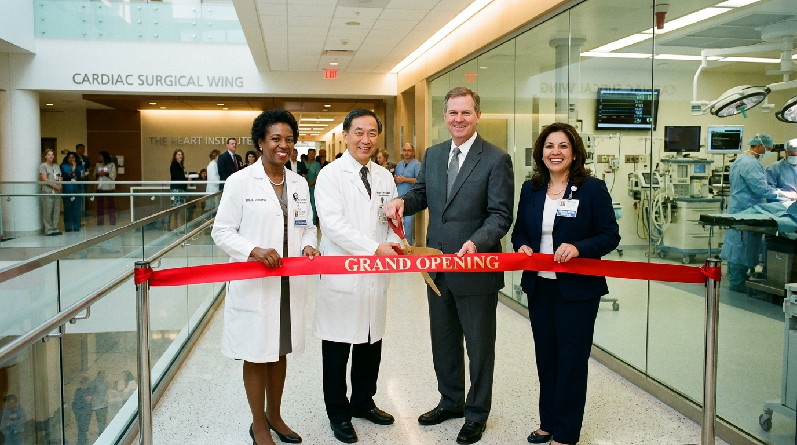

Caring for Hearts,
Changing Lives
For over 25 years, CardioVita has been a beacon of excellence in cardiovascular care, combining advanced medical expertise with genuine compassion for every patient who walks through our doors.

A Legacy of Heart Care Excellence
Founded in 1998 by a team of visionary cardiologists, CardioVita began as a small clinic with a bold mission: to make world-class cardiac care accessible to everyone.
Over two decades, we've grown into a leading cardiovascular center, treating over 50,000 patients and pioneering innovative procedures. Our journey has been driven by an unwavering commitment to medical excellence, continuous learning, and putting patients at the heart of everything we do.
Explore Our ServicesMilestones in Cardiac Care
Key moments that shaped CardioVita into the leading cardiovascular center it is today.

The Founding
CardioVita was established by Dr. Richard Chambers and Dr. Helena Park with a vision to create a patient-first cardiac care center. Starting with just 5 cardiologists and 20 beds, the clinic quickly gained recognition for its exceptional diagnostic accuracy and personalized approach.

Major Expansion
After 12 years of growth, CardioVita expanded to a state-of-the-art 200-bed facility with dedicated catheterization labs, an electrophysiology suite, and a cardiac rehabilitation center. We also launched our research division, contributing to 50+ published studies.

The Modern Era
Today, CardioVita stands as a JCI-accredited center of excellence with 15+ cardiologists, AI-assisted diagnostics, robotic-assisted surgery capabilities, and a fully digital patient portal. We continue to push the boundaries of cardiac care innovation.
Patient-First Philosophy
Every decision we make is guided by four core pillars that define who we are and how we care for you.
Compassion
We treat every patient with warmth, empathy, and genuine concern for their well-being and comfort treatment.
Innovation
We embrace the latest technologies and research to deliver cutting-edge cardiovascular treatments.
Excellence
We hold ourselves to the highest medical standards, ensuring every procedure meets world-class benchmarks.
Integrity
We maintain transparency, honesty, and ethical practices in every aspect of patient care and communication.
World-Class Facility
Our state-of-the-art cardiac center is equipped with the latest technology to provide comprehensive heart care.

What We Stand For
Our values are the foundation of every interaction, treatment, and decision at CardioVita.
Trust
Building lasting relationships through transparency and reliability.
Expertise
Board-certified specialists with decades of combined experience.
Innovation
Embracing new technologies for better patient outcomes.
Empathy
Understanding each patient's unique journey and concerns.
Teamwork
Collaborative care approach across all specialties.
Safety
Rigorous safety protocols and quality assurance measures.
Recognized for Excellence
Our quality of care is validated by the most prestigious healthcare accreditation bodies worldwide.
Rigorous Safety Standards
Every clinical pathway at CardioVita is anchored by strict, internationally verified patient safety protocols, zero-harm initiatives, and continuous multidisciplinary surgical reviews.
Validated Clinical Outcomes
Our procedural success and survival metrics consistently rank in the top percentile of national cardiovascular registries, validated through regular external quality audits.
Audited Clinical Outcomes & Governance
Independent registry benchmarking and multidisciplinary clinical oversight guide every procedure we perform.
Overall Institutional Benchmarks
Audited institutional performance vs. national cardiovascular hospital averages.
Medical Board & Clinical Oversight
Three independent committees oversee ethics, safety checklists, and peer-reviewed quality standards.
Surgical & Cath Peer Review
Weekly multidisciplinary case conferences bring interventionalists, surgeons, and imaging leads together before complex interventions.
Clinical Ethics & Informed Consent
Every patient receives visual treatment alternatives, unbiased risk disclosures, and shared decision-making tools prior to care in Clinic.
Community Outreach & Academic Training
Extending cardiovascular expertise beyond hospital walls through medical fellowships, school readiness, and public heart screenings.

Mobile Community Screenings
12,400+ ScreenedWeekend mobile clinics delivering free blood pressure, ECG checks, and cholesterol risk counseling across underserved neighborhoods.
School & Sports AED Readiness
85 Local SchoolsDonating automated external defibrillators and hands-only CPR certification workshops for youth coaches, teachers, and athletic staff.
Pediatric Heart Fund
320+ Kids HelpedCharitable surgical and interventional grants ensuring children born with congenital heart defects receive timely, life-saving treatment.
Start Your Heart Health Journey
Take the first step toward a healthier heart. Our board-certified cardiologists combine decades of clinical excellence with state-of-the-art diagnostics to deliver compassionate, personalized care.